24. July 2021
While working on the Vanim animation engine, I was trying to see how I could optimize the buffer used to store pixel data. What you're seeing below is what an empty 9x9 pixel buffer would look like.
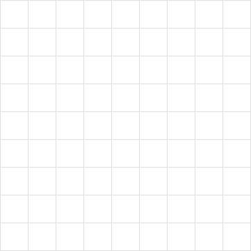
Let's draw a white triangle in this buffer, from top center (5,0) to the bottom right (9,9) and bottom left (0,9).
buffer.plot_triangle((5,0), (9,9), (0,9))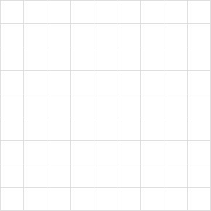
Like all data in a computer, the pixels are numbers. For black and white images it makes sense to use 0 and 1. But the buffer format that the Vanim animation engine uses is actually grey scale, meaning that the color can be black, white or something in between. Usually the brightest color value possible is 255. This is because a byte is often used to describe the color value. Since a byte consists of 8 bits, the max possible value that can be stored in a byte is (2^8 - 1) or 255.
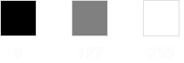
So if the background is black (0) and the triangle is white (255), the buffer would be:
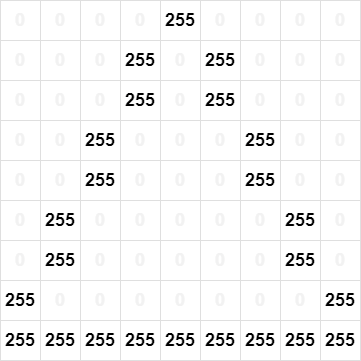
Now let's draw a horizontal line in the center, from left to right.
buffer.plot_line((0,5), (9,5))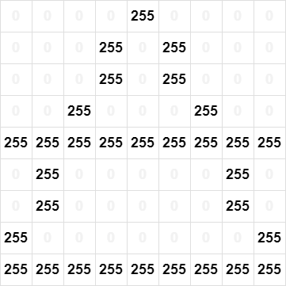
Great, we now have a triangle and a line! But, what if we wanted to rotate the triangle, and not the line? Perhaps we could redraw the buffer each time a shape is changed? While this solution wouldn't be bad for small buffers, what if we have a buffer that's 1000x1000 instead of 9x9? Then we'd have to redraw a lot of points!
Maybe we should draw each shape to their own buffer?
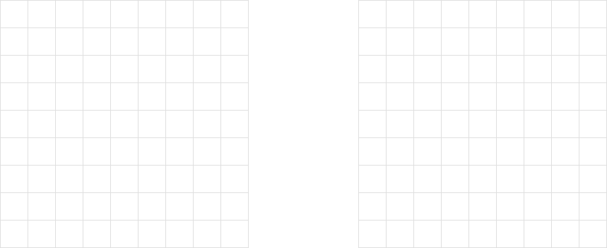
Now each shape can be modified separately, and when we want to draw to the screen, we just draw all the buffers.
This can very quickly become a problem though. Each shape is drawn on a 9x9 buffer. So this means that each buffer is 81 bytes in size. Let's say we draw 20 shapes. Now we have twenty 9x9 buffers which amounts to 1620 bytes. While 1620 bytes isn't a lot in and of it self, it quickly becomes a problem with bigger buffers. Let's say we draw 20 shapes again, but this time, each shape has its own 100x100 buffer. Now we're suddenly spending 10k bytes per shape or 200k bytes total.
To solve this we can use bitfield compression or my own term: "bit layering".
"bit layering": storing unique identifiers in bits.
For each bit in a datatype, it's possible to have a unique ID.
log2(v+1) = nor
sqrt(v+1) / 2 = n
This means that for something with a max value of v it's possible to have n unique IDs.
(Here we expect n to be a byte-aligned datatype).
Since a byte has a max value of 255:
log2(256) = 8This means that it's possible for us to store 8 unique IDs in the byte. Each ID will have to be equal to a single bit (I'll explain why in a bit).
Here's the list of unique IDs possible with a byte:
0000 0001 = 1
0000 0010 = 2
0000 0100 = 4
0000 1000 = 8
0001 0000 = 16
0010 0000 = 32
0100 0000 = 64
1000 0000 = 128Now that we know the possible IDs, let's start drawing!
We'll start with the same shape as in the beginning. Now, instead of drawing this triangle with color values, we'll draw it with an ID. Let's say that the triangle will have the first possible ID, 1.
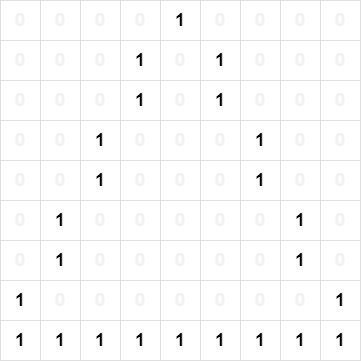
Nothing noticable has happened from our first example.
But let's now draw the same line as we did in the beginning, this line will have ID 2.
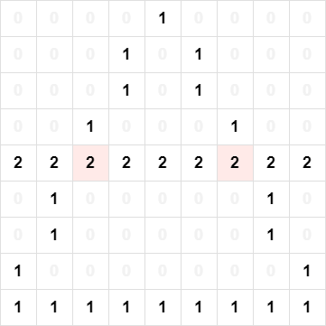
In the buffer it can be seen that the line ID has overwritten the triangle ID at position (2,5) and (6,5). This means that if we separated the polygons by their ID, we would get a triangle with broken midpoints, which is not what we want.
Let's try adding the line ID instead of overriding the value that was already there.
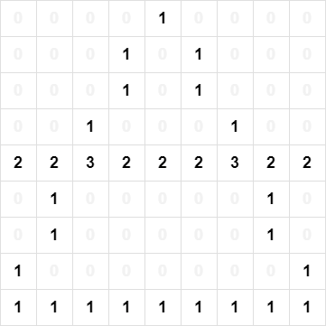
We can now see that where triangle 1 and line 2 overlap, it has set the point to 3. In the list of possible IDs (1,2,4,8,...), it's not possible to have an ID of 3. This means that we're now able to get the original IDs that overlap at that point.
So to get the IDs at that value, we first calculate the sum of possible IDs that could give 3. In this case it only happens to be ID 1 + 2 that can give a value of 3. This must therefore mean that shape 1 and 2 overlap at that point. This is better visualized with bits:
ID: 0000 0001
ID: 0000 0010 +
SUM 0000 0011 = 3Let's take another example. Let's draw the same triangle (ID 1) and line (ID 2), but we also draw a square at the edges (ID 4) and then a vertical line in the center (ID 8).
This would be the combined shape:
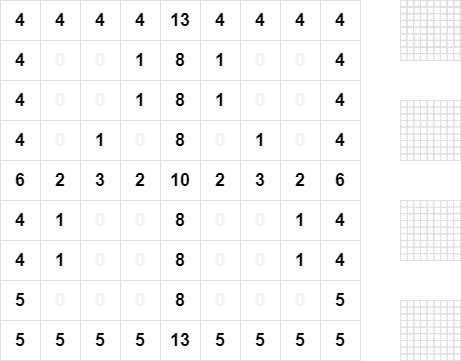
Here's me testing it with a function called get_amount_of_ids()
that I wrote in the V programming language.
fn main() {
mut buffer := Buffer{
width: 9
height: 9
}
buffer.data = [
byte(4),4, 4, 4, 13, 4, 4, 4, 4,
4, 0, 0, 1, 08, 1, 0, 0, 4,
4, 0, 0, 1, 08, 1, 0, 0, 4,
4, 0, 1, 0, 08, 0, 1, 0, 4,
6, 2, 3, 2, 10, 2, 3, 2, 6,
4, 1, 0, 0, 08, 0, 0, 1, 4,
4, 1, 0, 0, 08, 0, 0, 1, 4,
5, 0, 0, 0, 08, 0, 0, 0, 5,
5, 5, 5, 5, 13, 5, 5, 5, 5
]
mut possible := []byte{}
for i := 1; i < 256; i *= 2 {
possible << byte(i)
}
buffer.get_amount_of_ids(possible)
}This prints 4 which is the amount of unique IDs we're using to draw 4 shapes.
But how does it get the IDs? This is how:
fn get_ids(arr []byte, target int) []int {
mut ids := []int
for i := 0; i < arr.len; i++ {
if (target & (1 << i)) != 0 { {
ids << arr[i]
}
}
return ids
}
First we define the function get_ids() which takes an array of bytes arr (containing the possible unique IDs)
and a target value (which is an integer / natural number).
Then we also set this function to return []int which is an array of integers, that is going to contain the overlapping IDs.
An array of integers is then created, this array will contain the IDs we have found to overlap at that point. mut ids := []int
Now we get to the magical part.
for i := 0; i < arr.len; i++ {
if (target & (1 << i)) != 0 {
ids << arr[i]
}
}
First we go through the numbers 0 to amount_of_ids - 1 (0 to 7)
for i := 0; i < arr.len; i++ {
Then we check if this: (target & (1 << i)) does NOT equal 0.
This is where we talk about bitwise operators. Let's start with the first one: &, the binary "AND" operator.
0100 0110 (70)
|
0001 0011 (19)
v
0000 0010 (2)
Here we can see that something like 70 & 19 = 2, but why is this?
This is because & only uses a bit if it's 1 in both cases.
Here's a another example:
1111 (15)
| |
0101 (5)
v v
0101 (5)
Here 15 and 5 only have the first and third bit in common, therefore the output is 5.
We also have the << operator. This is the binary left shift operator.
33: 0010 0001
<<
66: 0100 0010
So it shifts all of the bits left by the amount you specified. This however can be shown with simple math. Let's say we have this:
a << bThat would be the same as:
a * (2^b)17 << 3 = 17 * (2^3) = 136
It's also possible to bit shift to the right >>.
This would be division instead of multiplication:
a / (2^b)Let's use this to simplify our code.
for i := 0; i < arr.len; i++ {
if (target & (1 << i)) != 0 {
ids << arr[i]
}
}Becomes:
for i := 0; i < arr.len; i++ {
if (target & (1 * math.pow(2, i))) != 0 {
ids << arr[i]
}
}It doesn't make sense to multiply by 1:
for i := 0; i < arr.len; i++ {
if (target & math.pow(2, i)) != 0 {
ids << arr[i]
}
}
Now let's visualize (target & math.pow(2, i)).
What IDs make up the top center point 13 in our merged buffers?
Since 13 is quite a small number, you might have already figured it out to be 1 + 4 + 8.
But let's try to code it:
get_ids([1,2,4,8,16,32,64,128], 13)for i := 0; i < arr.len; i++ {
if (13 & math.pow(2, i)) != 0 {
ids << arr[i]
}
}
i starts by being 0
(corresponding to ID 1 in arr), so let's replace math.pow(2, i) with math.pow(2, 0):
for i := 0; i < arr.len; i++ {
if (13 & math.pow(2, 0)) != 0 {
ids << arr[i]
}
}The zero exponent rule states that anything to the power of 0 is 1, so math.pow(2, 0) becomes 1:
for i := 0; i < arr.len; i++ {
if (13 & 1) != 0 {
ids << arr[i]
}
}First we have the "AND" operation 13 & 1:
0000 1101 (13)
& |
0000 0001 (1) math.pow(2, 0) i=0
= v
0000 0001 (1)
Since 13 and 1 both have the first bit in common, this
means that the result is 1, and now we check if it is NOT 0:
if 1 != 0 {
ids << arr[0]
}Since the result isn't 0, that means we have found one of the overlapping IDs.
Now we have the first ID which is 1.
Now let's keep increasing i:
0000 1101 (13)
&
0000 0010 (2) math.pow(2, 1) i=1
=
0000 0000 (0)Here we can see that 13 and 2 have no bits in common.
Let's move to the next one:
0000 1101 (13)
& |
0000 0100 (4) math.pow(2, 2) i=2
= v
0000 0100 (4)
Here we can see that when i is 2, then math.pow(2, i) is equal to 4
which has a bit in common with 13, meaning that the next overlapping ID is 4.
Now we keep doing this until i goes through all possible IDs.
0000 1101 (13)
& |
0000 1000 (8) math.pow(2, 3) i=3
= v
0000 1000 (8)The next IDs that will be checked are 16, 32, 64, 128 which are all more than our target value of 13, therefore it does not make sense to test the rest of these values.
Now he have collected all three IDs that equal our target value, [1, 4, 8].
We can verify this by getting the sum of 1+4+8 which is 13, the number
we wanted to get the IDs from.
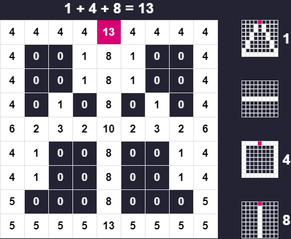
Each of the IDs are appended to the ids array.
ids << arr[i]
This is not bitshifting to the left, this is pushing to an array, why the V programming language developers
decided on this, I do not understand. I'd much rather have ids.push(arr[i]) or ids.append(arr[i])
to avoid confusion.
Since it's possible to have 8 IDs, this means that it's now possible to merge 8 buffers into one, meaning that it's possible to reduce memory usage by 87.5%!
Now, what if you were using 32 bit integers instead of 8 bit bytes?
Benjamin F. Stigsen